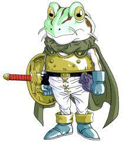
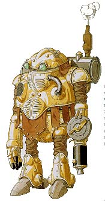
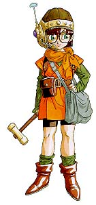
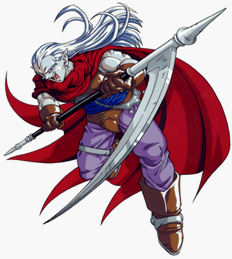
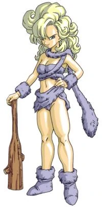

Listinha dos MELHORES PERSONAGENS:
Chrono é o nosso protagonista, um espadashin de cabelos vermelhos que usa katanas, logo no começo de sua jornada ele se junta a marle, na famosa feira do milenio enquanto ia visitar a sua amiga de longa data, Lucca, porem depois de um acidente envolvendo a nova invenção da Lucca, a sua aventura entre as eras começa. Ele é o personagens com mais habilidades em grupo do jogo e é o linder da equipe tendo o respeito e a admiração de todos.
Seus status são banstante equilibrados e o seu atributo magico é Luz. Chrono é bom em tudo, porem não é o melhor em nada
Suas principais tecnicas sao:
Spincut
Life
Frenzy
Ligthinig 2
Luminaris
Marle é uma princesa que se recusa a viver como tal, usuaria de uma besta e com um rabo de cavalo loiro, ela se encontra com chrono em uma de suas comuns escapadas do castelo de seu pai. Ao encontrar com chrono pela primeira vez na feira milenar, ela se encanta com a bondeda do seu agora novo amigo, que a ajudou a encontrar o seu pingente perdido, juntos eles dão um rolê pela feira milenar e vão de encontro a Lucca para ver sua nova invenção, porem depois de um acidente na maquina de teletransporte envolvendo o seu pingente misterioso, Marle vai para em uma epoca diferente da sua forçando o Chrono a ir resgatala. Marle é a personagem mais coração do grupo e é uma exelente maga tanto ofencivamente quanto defencivamente.
Seus status são altos em defeça magica e em poder magico, porem não tem um bom ataque basico e nem velocidade, seu atributo magico é Aguá com o foco em gelo. Marle é a melhor suporte do jogo mas tambem consegue ser boa ofencivamente
Suas principais tecnicas são:
Provoke
Haste
Ice 2
Cura 2
Life 2
Frog
Robo
Lucca
Magus
Ayla
